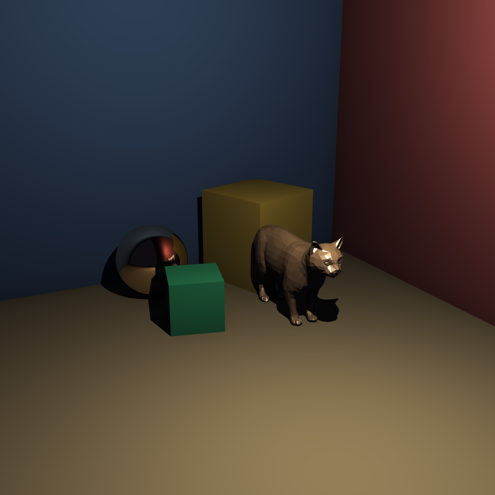
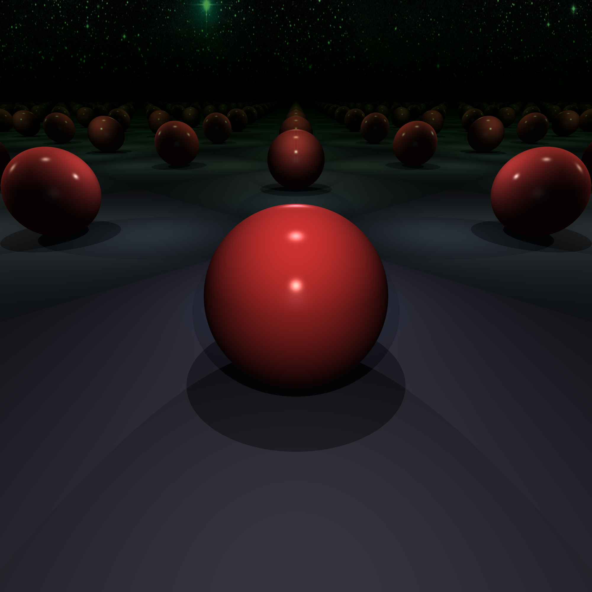
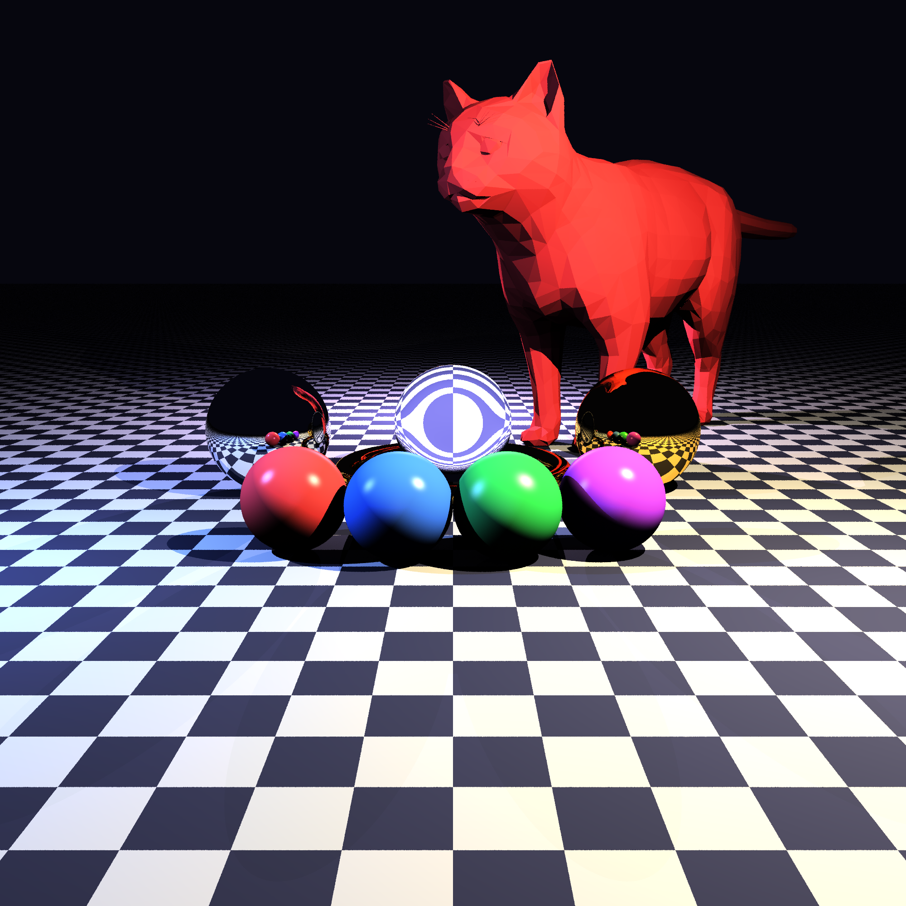
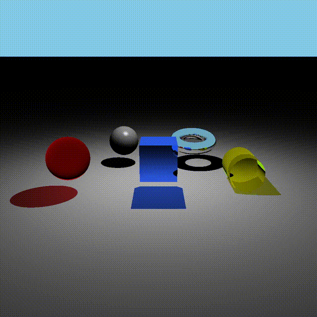
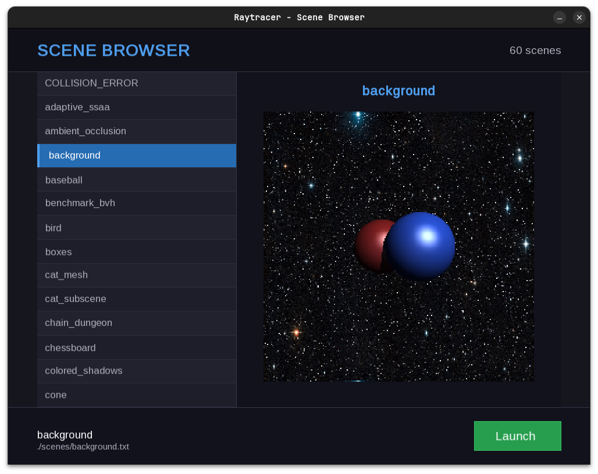
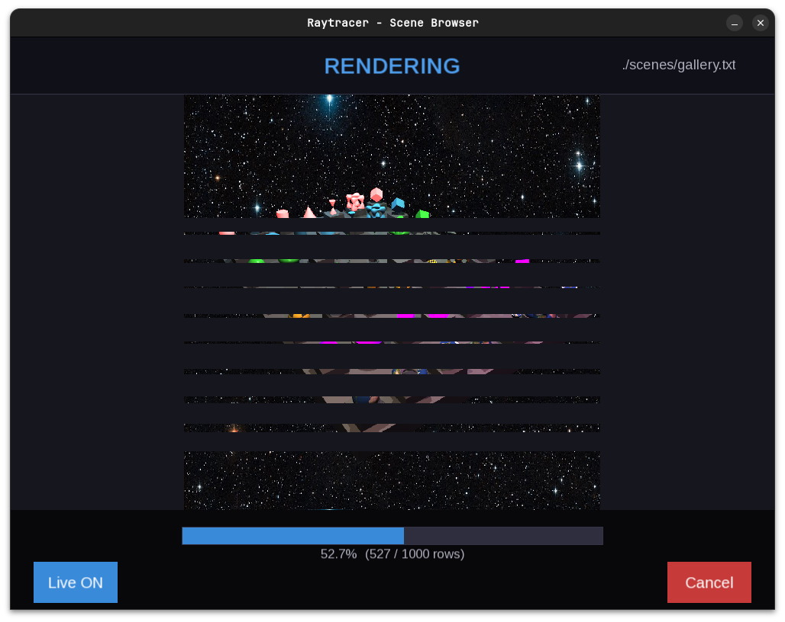

A CPU raytracer written in C++20 with a plugin-based architecture. Supports physically-based materials, fractal shapes, scene composition, antialiasing, ambient occlusion, and live preview.


Getting Started
Clone
Build
Linux (with live preview):
macOS (SFML not supported, disable UI):
This builds the raytracer binary and all plugins into plugins/.
Render a scene
Output format is determined by the output field in your scene config (.png, .jpg, or .ppm). We use STB Image for loading/saving images, so any format it supports should work.
Gallery
 |  |
 |  |

Features
Shapes
17 primitives and implicit surfaces, all loaded as plugins at runtime:
- Basic: Sphere, Box, Plane, Rectangle, Cylinder, Cone, Hourglass
- Limited variants: LimitedCylinder, LimitedCone, LimitedHourglass (capped with radius/height bounds)
- Complex: Torus, Tanglecube, Triangle, Mobius Strip
- Fractals: Julia Set 3D (distance-estimated), Menger Sponge
- Mesh: OBJ file loading via Triangle soup
Materials
- Lambertian - matte diffuse
- Colored Diffuse - per-face color control
- Phong - specular highlights with configurable shininess
- Reflective - mirror reflections with reflectivity factor
- Refractive - glass/water with opacity and refractive index
- Chessboard - procedural checkerboard pattern
- Perlin Noise - procedural noise texture
- Image Texture - PNG, JPG, or PPM mapped onto shapes
- Normal Mapped - bump detail via normal map images
Lighting
- Point lights (position, color, intensity)
- Directional lights (direction, color, intensity)
- Colored shadows
Rendering
- Antialiasing: SSAA (jittered grid) and Adaptive SSAA (variance-driven subdivision)
- Ambient Occlusion: hemisphere sampling, configurable samples and radius
- Tone Mapping: ACES filmic curve with adjustable strength
- Background: solid color or HDR/image backdrop
- Multithreading: configurable thread count
- BVH + AABB culling: bounding volume hierarchy on all bounded shapes and meshes
- Recursive scattering: reflections and refractions with configurable depth
Scene System
Scenes are text configs (libconfig++ format). Materials are defined once and referenced by name. Scenes can embed other scene files with their own position, rotation, and scale — recursively, with cycle detection.
Live Preview
Linux only (-DWITH_UI=ON). Built with SFML.
Scene browser. Pick a scene file, see a low-res preview render in the sidebar.

Render view. Pixels stream in row by row as the render progresses. Cancel anytime.

Hot reload. Edit your scene file and save. The render restarts automatically.
Plugin System
Every shape, material, and light is a dynamically loaded .so. Adding a new primitive means implementing one interface and dropping it in plugins/. No recompilation of core required.
Fun fact, for a more optimised implementation, we would not use dynamic loading at all, as it is slower than static linking. this was mentionned in the subject, so we went with it :)
Scene Config Reference
Full parameter list available via:
Find all scene config options using: